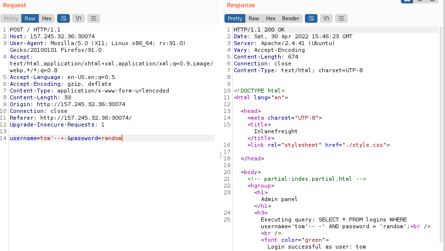

AND operator
While the OR Injection Bypass return a general TRUE, that can login us with the same privileges of the who own the BackEnd SQL Query
If we want to login with a specific user we need to use AND
•
Successful Bypass ◇ by knowing the username
SELECT * FROM logins WHERE username='
tom'--+-' AND password='random'
